OFFICIAL ENTERPRISE MANUAL · பயனர் கையேடு
கே.கே.கே ஆயில் மில் · KKK Oil Factory ERP
வெளியீடு: v2.5.0
நிலையான ஜிஎஸ்டி & ஆலை மேலாண்மை
எளிய தமிழ் பயன்பாட்டு வழிகாட்டி & பொத்தான்கள் விளக்கம்
விற்பனை, இருப்பு & ஆலை செயல்பாட்டு கையேடு
ஆலை பணியாளர்கள், பில்லிங் காசாளர்கள் மற்றும் மேற்பார்வையாளர்களுக்கான முழுமையான வழிகாட்டி. திரை வாரியான உண்மை புகைப்படங்கள் (Screenshots), படிவ விவரங்கள், விசைப்பலகை சுருக்குவழிகள் (Hotkeys), மற்றும் ஒவ்வொரு பொத்தானின் (Buttons) செயல்முறை விளக்கங்கள் எளிய தமிழில் தொகுக்கப்பட்டுள்ளது.
| நிறுவனத்தின் பெயர் (Enterprise) | கே.கே.கே ஆயில் மில் (KKK Oil Factory · Edible Oil Extraction Mill) |
| முதன்மை உற்பத்தி & ஆலை | தமிழ்நாடு, இந்தியா · மாநில குறியீடு (State Code): 33 (GST Intra-State) |
| பயன்பாட்டு அமைப்புகள் (Platforms) | டெஸ்க்டாப் கணினி (Chrome/Edge/Safari), மொபைல் செயலி (Android & iOS) |
| பயன்படுத்தும் பொறுப்புகள் (Roles) | Super Admin, ERP Admin, Plant Manager, Billing Cashier, Production Supervisor, Driver |
| கையேட்டின் கட்டமைப்பு (Index) | பகுதி 1: டெஸ்க்டாப் திரைகள் (15 பக்கங்கள்) · பகுதி 2: மொபைல் திரைகள் (6 பக்கங்கள்) · பகுதி 3: வழிகாட்டி & SOP (2 பக்கங்கள்) |
SYSTEM INDEX & NAVIGATION
பொருளடக்கம் & விரைவு பக்க வழிகாட்டி
INDEX GUIDE
அனைத்து திரைகள்
பகுதி 1: கணினி டெஸ்க்டாப் திரைகள் (Desktop Screens 01 to 15)
| பக்கம் 3 | 01 · /login — உள்நுழைவு & பாதுகாப்பு வாயில் (User Authentication Gate) |
| பக்கம் 4 | 02 · /dashboard — முதன்மை கட்டுப்பாட்டு பலகை (Executive Overview) |
| பக்கம் 5 | 03 · /billing — மொத்த & சில்லறை விற்பனை பில்லிங் (B2B GST POS) |
| பக்கம் 6 | 04 · /billing-history — பில் வரலாறு & மறுபதிப்பு (Invoices & Cancel) |
| பக்கம் 7 | 05 · /products — எண்ணெய் ரகங்கள் பட்டியல் (Product Catalog Master) |
| பக்கம் 8 | 06 · /price-management — தினசரி விலை நிர்ணயம் (Daily Price Engine) |
| பக்கம் 9 | 07 · /price-history — விலை மாற்ற வரலாறு (Price Audit & Trends) |
| பக்கம் 10 | 08 · /inventory — சைலோ தொட்டிகள் & இருப்பு (Silo Tanks & Warehouse) |
| பக்கம் 11 | 09 · /purchase — விதை வரவு & எடை மேடை (Seed Inward & Weighbridge) |
| பக்கம் 12 | 10 · /production — ஆலை உற்பத்தி & புண்ணாக்கு (Expeller Milling Batches) |
| பக்கம் 13 | 11 · /customers — வாடிக்கையாளர்கள் கணக்கு (Customer Ledgers & Credit) |
| பக்கம் 14 | 12 · /suppliers — விதை சப்ளையர்கள் கணக்கு (Vendor & Mandi Directory) |
| பக்கம் 15 | 13 · /reports — விற்பனை & ஜிஎஸ்டி அறிக்கைகள் (Tax Analytics & GSTR-1) |
| பக்கம் 16 | 14 · /employees — ஊழியர்கள் & அனுமதி அமைப்புகள் (Staff & Access Roles) |
| பக்கம் 17 | 15 · /settings — கணினி & பிரிண்டர் அமைப்புகள் (Hardware & System Setup) |
பகுதி 2: மொபைல் செயலி திரைகள் (Mobile Screens M-01 to M-06)
| பக்கம் 18 | M-01 · Mobile Login Gateway (மொபைல் உள்நுழைவு திரை) |
| பக்கம் 19 | M-02 · Mobile Operations Dashboard (மொபைல் கட்டுப்பாட்டு பலகை) |
| பக்கம் 20 | M-03 · Mobile Fast Billing POS (மொபைல் விரைவு பில்லிங் கவுண்டர்) |
| பக்கம் 21 | M-04 · Mobile Silo Tanks & Stock Gauges (மொபைல் ஆயில் தொட்டி இருப்பு) |
| பக்கம் 22 | M-05 · Mobile Voucher History & Reprints (மொபைல் பில் வரலாறு & ரசீது) |
| பக்கம் 23 | M-06 · Mobile More Modules Navigation Hub (மொபைல் கூடுதல் மெனு அமைப்புகள்) |
பகுதி 3: முதன்மை குறிப்பு & தினசரி SOP செயல்முறைகள்
| பக்கம் 24 | Master Button & Hotkey Reference (முக்கிய பொத்தான்கள் & சுருக்குவழிகள் பட்டியல்) |
| பக்கம் 25 | Standard Operating Procedures (காலை ஆலை தொடக்கம் முதல் இரவு கணக்கு முடிப்பது வரை SOP) |
SCREEN 01 · டெஸ்க்டாப் கணினி திரை
Authentication & Session Security Gate — உள்நுழைவு & பாதுகாப்பு வாயில்
/login
அனைத்து ஆலை பணியாளர்கள் & நிர்வாகிகள்
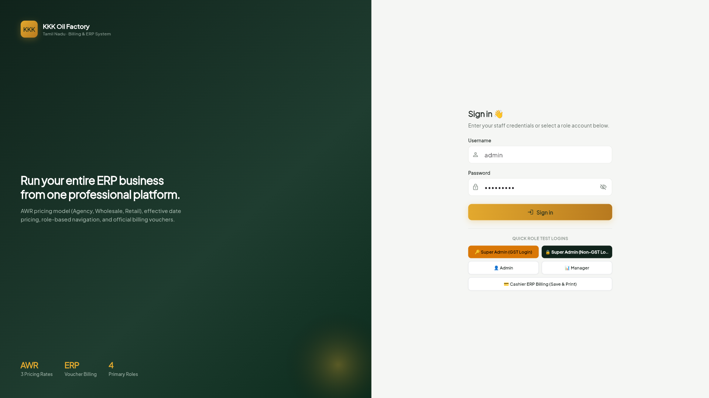
படிவ விவரங்கள் & உள்ளீடுகள்
- • Username: ஊழியரின் பயனர் பெயர் (எ.கா.
admin,mgr,cashier). - • Password: ரகசிய கடவுச்சொல் (கண் குறியீட்டை அழுத்தி எழுத்துக்களை சரிபார்க்கலாம்).
- • Brand Panel: அதிகாரப்பூர்வ கே.கே.கே ஆயில் மில் சின்னம் பொறிக்கப்பட்ட முகப்பு திரை.
- • Session Security: தவறான கடவுச்சொல் 3 முறை அளிக்கப்பட்டால் கணக்கு தற்காலிகமாக பூட்டப்படும்.
பொத்தான்கள் & செயல்பாடுகள்
-
Sign inஉள்நுழைந்து உங்கள் பணிக்குரிய முகப்பு திரைக்குச் செல்ல
-
Super Adminமுழு நிர்வாகி கணக்கை தானாக நிரப்ப
-
Adminஆலை அலுவலக நிர்வாகி கணக்கை நிரப்ப
-
Managerஆலை பொது மேலாளர் கணக்கை நிரப்ப
-
Cashierவிற்பனை பில்லிங் காசாளர் கணக்கை நிரப்ப
-
Supervisorஉற்பத்தி மேற்பார்வையாளர் கணக்கை நிரப்ப
வேலை செய்யும் முறை (Workflow)
- பயனர் பெயர் (Username) மற்றும் கடவுச்சொல்லை (Password) உள்ளிடவும்.
- அல்லது விரைவு பட்டன்களில் (Admin / Cashier / Manager) உங்கள் பொறுப்பை கிளிக் செய்யவும்.
- Sign in பொத்தானை அழுத்தவும்; உங்கள் பொறுப்புக்குரிய திரை உடனே திறக்கும்.
SCREEN 02 · டெஸ்க்டாப் கணினி திரை
Executive Overview & Mill Operations — முதன்மை கட்டுப்பாட்டு அறை & தகவல் பலகை
/dashboard
நிர்வாகிகள், ஆலை மேலாளர்கள் & மேற்பார்வையாளர்கள்
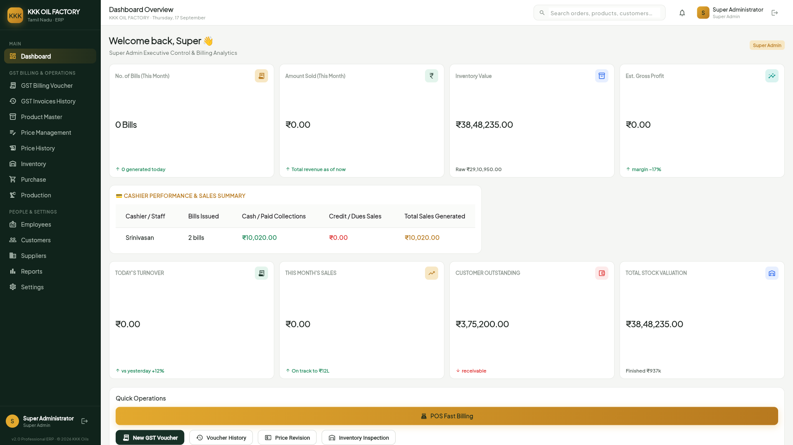
முக்கிய புள்ளிவிவரங்கள் (Metrics)
- • Today Sales ₹: இன்றைய நாளின் மொத்த ஜிஎஸ்டி விற்பனை வசூல் ரொக்கம்.
- • Silo Tank Stock %: எண்ணெய் சேமிப்பு தொட்டிகளில் உள்ள தற்போதைய இருப்பு அளவு.
- • Milling Output: ஆலையில் இன்று அரவை செய்யப்பட்ட எண்ணெய் மற்றும் புண்ணாக்கு அளவு.
- • Pending Invoices: இன்னும் பணம் வசூலாகாத நிலுவை பில்களின் எண்ணிக்கை.
பொத்தான்கள் & செயல்பாடுகள்
-
New Invoice (+)புதிய விற்பனை பில் போடும் திரைக்கு உடனடியாக செல்ல
-
Record Millingபுதிய எண்ணெய் ஆலை பேட்ச் பதிவை தொடங்க
-
Refresh Dataசமீபத்திய புள்ளிவிவரங்களை உடனடியாக புதுப்பிக்க
-
Export Summaryஇன்றைய விற்பனை சுருக்கத்தை எக்செல் கோப்பாக பதிவிறக்க
-
View Silo Gaugesஎண்ணெய் தொட்டிகளின் முழு இருப்பு விவரத்தை பார்க்க
வேலை செய்யும் முறை (Workflow)
- காலையில் பணி தொடங்கும் போது தொட்டிகளின் எண்ணெய் இருப்பு அளவை சரிபார்க்கவும்.
- விற்பனை பில் போட மேல் வலதுபுறத்தில் உள்ள New Invoice (+) அழுத்தவும்.
- ஆலையின் உற்பத்தி மற்றும் விற்பனை நிலவரத்தை இத்திரையில் நேரலையாக கண்காணிக்கலாம்.
SCREEN 03 · டெஸ்க்டாப் கணினி திரை
Standard B2B GST Invoicing & POS Counter — மொத்த & சில்லறை விற்பனை பில்லிங் கவுண்டர்
/billing
பில்லிங் காசாளர்கள், விற்பனை நிர்வாகிகள் & மேலாளர்கள்
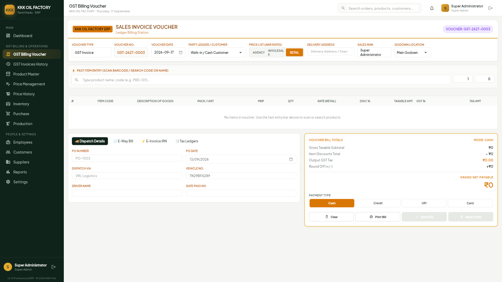
பில்லிங் படிவ விவரங்கள்
- • Customer Phone / GSTIN: வாடிக்கையாளர் எண் அல்லது ஜிஎஸ்டி எண் (பெயர் தானாக வரும்).
- • Product Selector: எண்ணெய் வகை (Groundnut / Gingelly / Coconut Oil).
- • Packaging Size: 1L பாக்கெட், 5L கேன், 15Kg டின் அல்லது பேரல் தேர்வு.
- • Payment Mode: ரொக்கம் (Cash), கூகுள் பே/UPI, அல்லது கடன் (Credit).
பொத்தான்கள் & செயல்பாடுகள்
-
Save Invoice (F2)பில்லைச் சேமித்து, சரக்கு இருப்பு கழித்து, பில் உருவாக்க
-
Print A4 Tax Invoiceஅரசு அங்கீகாரம் பெற்ற A4 ஜிஎஸ்டி வரி பில் அச்சிட
-
Thermal Receipt (3-inch)கவுண்டர் வாடிக்கையாளருக்கு சிறிய தெர்மல் ரசீது வழங்க
-
Apply Special Discountஅங்கீகரிக்கப்பட்ட சிறப்பு தள்ளுபடி வழங்க
-
Clear Formபடிவத்தில் உள்ள அனைத்து விவரங்களையும் நீக்கி புதிதாக்க
வேலை செய்யும் முறை (Workflow)
- வாடிக்கையாளர் மொபைல் எண் உள்ளிடவும்; பழைய வியாபாரி எனில் ஜிஎஸ்டி எண் தானாக வரும்.
- எண்ணெய் வகை மற்றும் அளவை உள்ளிடவும்; 5% ஜிஎஸ்டி வரி தானாக கணக்கிடப்படும்.
- பணம் செலுத்தும் முறையைத் தேர்வு செய்து F2 அல்லது Save Invoice அழுத்தவும்.
SCREEN 04 · டெஸ்க்டாப் கணினி திரை
Billing Records, Search & Fiscal Audit — விற்பனை பில் வரலாறு & ரசீது மறுபதிப்பு
/billing-history
காசாளர்கள், தலைமை கணக்காளர் & தணிக்கையாளர்கள்
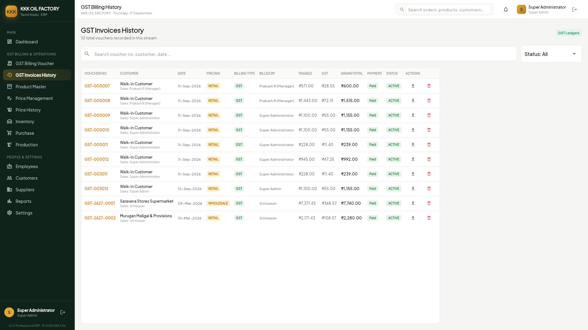
தேடல் & வடிகட்டும் வசதிகள்
- • Invoice Search: பில் எண் (எ.கா. KKK-2026-0042) மூலம் நேரடியாக தேட.
- • Date Range Filter: குறிப்பிட்ட நாள் அல்லது மாத பில்களை மட்டும் பிரித்து பார்க்க.
- • Payment Filter: செலுத்தியவை (Paid) அல்லது கடன் பில்களை (Pending) பார்க்க.
- • Customer Filter: குறிப்பிட்ட வியாபாரியின் பில்களை மட்டும் பட்டியலிட.
பொத்தான்கள் & செயல்பாடுகள்
-
Reprint (A4)பழைய பில்லை மீண்டும் தெளிவான A4 தாளில் அச்சிட
-
Download PDFபில் நகலை மொபைல்/வாட்ஸ்அப்பில் அனுப்ப PDF கோப்பாக சேமிக்க
-
Thermal Reprintசிறிய தெர்மல் ரசீதை மறுபதிப்பு எடுக்க
-
Cancel Invoiceதவறான பில்லை ரத்து செய்ய (மேலாளர் அனுமதி மற்றும் காரணம் தேவை)
-
Export CSVஅனைத்து பில் விவரங்களையும் எக்செல் கோப்பாக கணக்கிற்கு எடுக்க
வேலை செய்யும் முறை (Workflow)
- வாடிக்கையாளர் பழைய பில் நகல் கேட்டால், பில் எண் அல்லது தேதியை உள்ளிட்டுத் தேடவும்.
- பட்டியலில் வரும் பில்லுக்கு நேராக உள்ள Reprint (A4) பொத்தானை அழுத்தவும்.
- மாதாந்திர ஜிஎஸ்டி கணக்குகளை சரிபார்க்க Export CSV மூலம் விவரங்களை எடுக்கலாம்.
SCREEN 05 · டெஸ்க்டாப் கணினி திரை
Master Product Catalog & Packaging Sku — எண்ணெய் பொருட்கள் அட்டவணை & விவரங்கள்
/products
ஆலை மேலாளர், சரக்கு மேற்பார்வையாளர் & நிர்வாகி
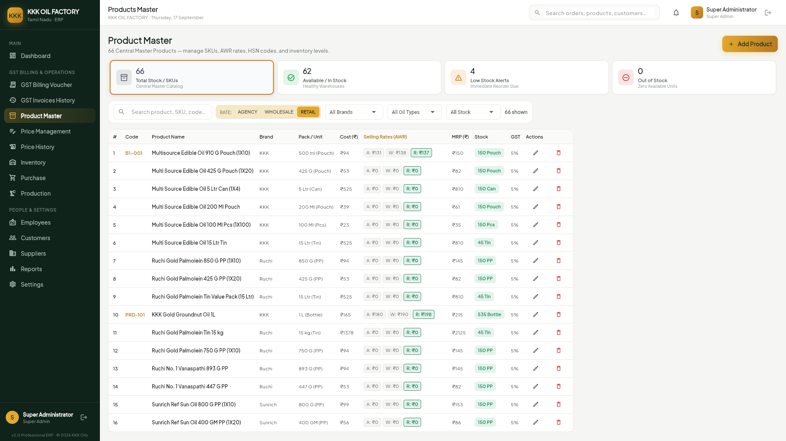
பொருட்கள் அட்டவணை விவரங்கள்
- • Product Name: கடலை எண்ணெய், நல்லெண்ணெய், தேங்காய் எண்ணெய், பிண்ணாக்கு.
- • Packaging Size: 500ml, 1L பாக்கெட், 5L கேன், 15Kg டின், பேரல்.
- • HSN Code: அரசின் வணிக வரி குறியீடு (எ.கா. 1508, 1515).
- • Base Rate & Tax: உற்பத்தி அடிப்படை விலை மற்றும் 5% ஜிஎஸ்டி வரி விகிதம்.
பொத்தான்கள் & செயல்பாடுகள்
-
+ Add Productபுதிய எண்ணெய் அல்லது பேக்கிங் அளவை பட்டியலில் சேர்க்க
-
Edit (Pencil)பொருளின் பெயர், பேக்கிங் அளவு அல்லது எடையை திருத்த
-
Toggle Activeவிற்பனையை தற்காலிகமாக நிறுத்த அல்லது மீண்டும் தொடங்க
-
Export Catalogஅனைத்து பொருட்கள் பட்டியலையும் எக்செல் கோப்பாக பதிவிறக்க
-
Barcode Printடின்களில் ஒட்டுவதற்கான பார்கோடு ஸ்டிக்கர் அச்சிட
வேலை செய்யும் முறை (Workflow)
- புதிய தயாரிப்பு அல்லது புதிய பேக்கிங் அளவு வந்தால் + Add Product அழுத்தவும்.
- பொருளின் பெயர், அளவு, HSN குறியீடு மற்றும் விலையை உள்ளிட்டு சேமிக்கவும்.
- பொருளின் விவரங்களை மாற்ற Edit (Pencil) பொத்தானைப் பயன்படுத்தவும்.
SCREEN 06 · டெஸ்க்டாப் கணினி திரை
Commodity Margin Engine & Daily Rates — தினசரி எண்ணெய் விலை நிர்ணயம்
/price-management
உரிமையாளர், பொது மேலாளர் & நிதி நிர்வாகி
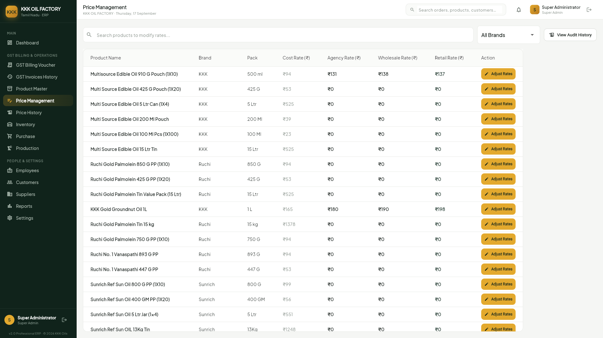
விலை நிர்ணய படிவ விவரங்கள்
- • Market Base Rate: இன்றைய மண்டி நிலவரப்படி எண்ணெய் அடிப்படை விலை.
- • Wholesale Margin: மொத்த வியாபாரிகளுக்கான குறைந்தபட்ச லாப விகிதம்.
- • Retail Margin: சில்லறை வாடிக்கையாளர்களுக்கான லாப விகிதம்.
- • Effective Date: புதிய விலை எப்போது முதல் அமலுக்கு வருகிறது என்ற நேரம்.
பொத்தான்கள் & செயல்பாடுகள்
-
Update All Pricesஅனைத்து பொருட்களுக்கும் புதிய விலையை உடனடியாக நடைமுறைப்படுத்த
-
Reset to Defaultsதவறு நடந்தால் பழைய விலைக்கு உடனடியாக மாற்றியமைக்க
-
Bulk Margin %அனைத்து எண்ணெய்களுக்கும் ஒரே கிளிக்கில் % அடிப்படையில் விலை கூட்ட
-
Print Price Noticeவாடிக்கையாளர் அறிவிப்பு பலகைக்கான புதிய விலை பட்டியலை அச்சிட
வேலை செய்யும் முறை (Workflow)
- காலையில் விதை மண்டி நிலவரத்திற்கு ஏற்ப புதிய அடிப்படை விலையை உள்ளிடவும்.
- மொத்த விற்பனை மற்றும் சில்லறை விற்பனை விலைகளை சரிபார்க்கவும்.
- Update All Prices பொத்தானை அழுத்தவும்; உடனே பில்லிங்கில் புதிய விலை அமலாகும்.
SCREEN 07 · டெஸ்க்டாப் கணினி திரை
Commodity Price Movement & Audit Logs — எண்ணெய் விலை மாற்ற வரலாறு & தணிக்கை
/price-history
ஆடிட்டர், வணிக ஆய்வாளர் & பொது மேலாளர்
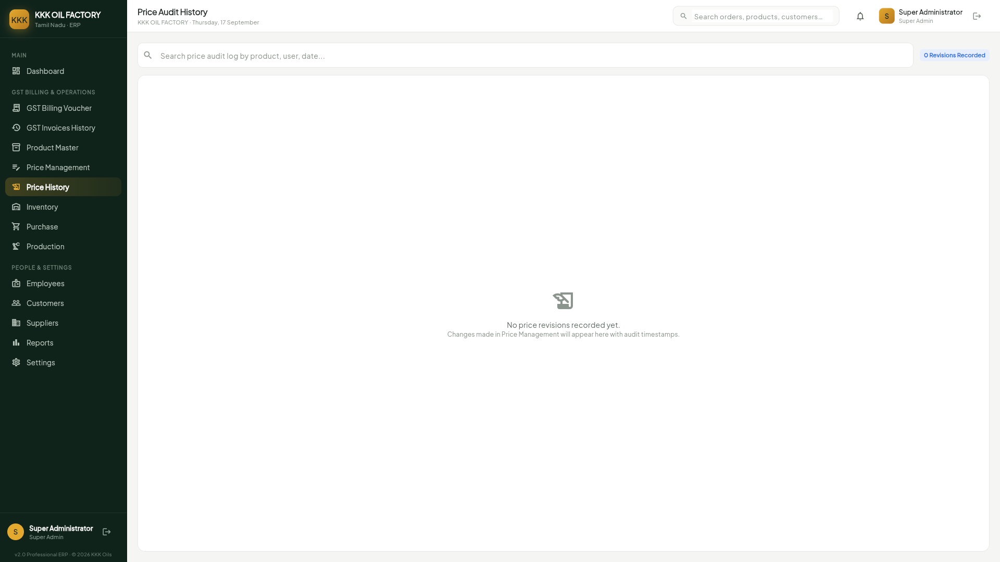
தணிக்கை அட்டவணை விவரங்கள்
- • Change Timestamp: விலை மாற்றப்பட்ட துல்லியமான தேதி மற்றும் நேரம்.
- • Old vs New Price: முந்தைய விலை மற்றும் மாற்றப்பட்ட புதிய விலை ஒப்பீடு.
- • Changed By User: விலையை மாற்றிய அதிகாரியின் பயனர் பெயர்.
- • Price Difference ₹: விலையேற்றம் அல்லது விலை இறக்கம் ரூபாயில்.
பொத்தான்கள் & செயல்பாடுகள்
-
Filter by Productகுறிப்பிட்ட எண்ணெய் ரகத்தின் வரலாற்றை மட்டும் பார்க்க
-
Date Rangeகுறிப்பிட்ட மாதத்தின் விலை மாற்றங்களை மட்டும் வடிகட்ட
-
Export Audit PDFவிலை தணிக்கை அறிக்கையை அச்சு வடிவில் பெற
-
View Price Graphவிலை ஏற்ற இறக்கங்களை வரைபடமாக (Chart) பார்க்க
வேலை செய்யும் முறை (Workflow)
- கடந்த வாரங்களில் அல்லது மாதங்களில் என்ன விலை இருந்தது என்பதை அறிய தேதியை தேர்வு செய்யவும்.
- விலையை மாற்றிய அதிகாரி மற்றும் காரணத்தை சரிபார்க்கவும்.
- வணிக தணிக்கைக்கு தேவைப்பட்டால் Export Audit PDF மூலம் அறிக்கை எடுக்கவும்.
SCREEN 08 · டெஸ்க்டாப் கணினி திரை
Silo Tank Volumes & Finished Goods Stock — சைலோ தொட்டிகள் & சேமிப்பு கிடங்கு இருப்பு
/inventory
கிடங்கு காப்பாளர், ஆலை மேற்பார்வையாளர் & மேலாளர்
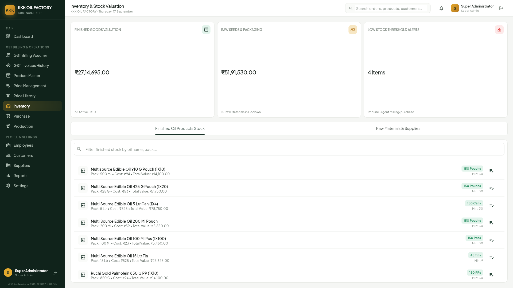
தொட்டி & கிடங்கு இருப்பு விவரங்கள்
- • Silo Tank 1 (Groundnut Oil): கடலை எண்ணெய் தொட்டியின் தற்போதைய லிட்டர் & %.
- • Silo Tank 2 (Gingelly Oil): நல்லெண்ணெய் தொட்டியின் இருப்பு அளவு.
- • Finished Goods Stock: பேக் செய்யப்பட்ட 1L பாக்கெட், 15Kg டின் இருப்பு.
- • Low Stock Alerts: எண்ணெய் இருப்பு 15% கீழே குறைந்தால் சிவப்பு எச்சரிக்கை.
பொத்தான்கள் & செயல்பாடுகள்
-
Stock Adjustmentநேரடி ஆய்வின்படி கணினி இருப்பை சரிசெய்து திருத்த
-
Transfer to Packingதொட்டியிலிருந்து பேக்கிங் பகுதிக்கு எண்ணெய் மாற்றத்தை பதிவு செய்ய
-
Stock Audit Reportஇன்றைய முழு இருப்பு நிலவரத்தை அச்சிட
-
Physical Dip Entryஅளவுகோல் மூலம் எடுத்த நேரடி தொட்டி அளவை உள்ளிட
வேலை செய்யும் முறை (Workflow)
- தினசரி காலையில் தொட்டிகளின் அளவுமானியை (Gauge Level) சரிபார்க்கவும்.
- பேக்கிங் பிரிவுக்கு எண்ணெய் அனுப்பும்போது Transfer to Packing மூலம் பதிவு செய்யவும்.
- மாத இறுதியில் நேரடி எண்ணிக்கைக்குப் பின் Stock Adjustment மூலம் கணக்கை சரிசெய்யவும்.
SCREEN 09 · டெஸ்க்டாப் கணினி திரை
Seed Inward, Weighbridge & Procurement — விதை வரவு & எடை மேடை கொள்முதல்
/purchase
எடைமேடை காசாளர், கொள்முதல் அதிகாரி & மேலாளர்
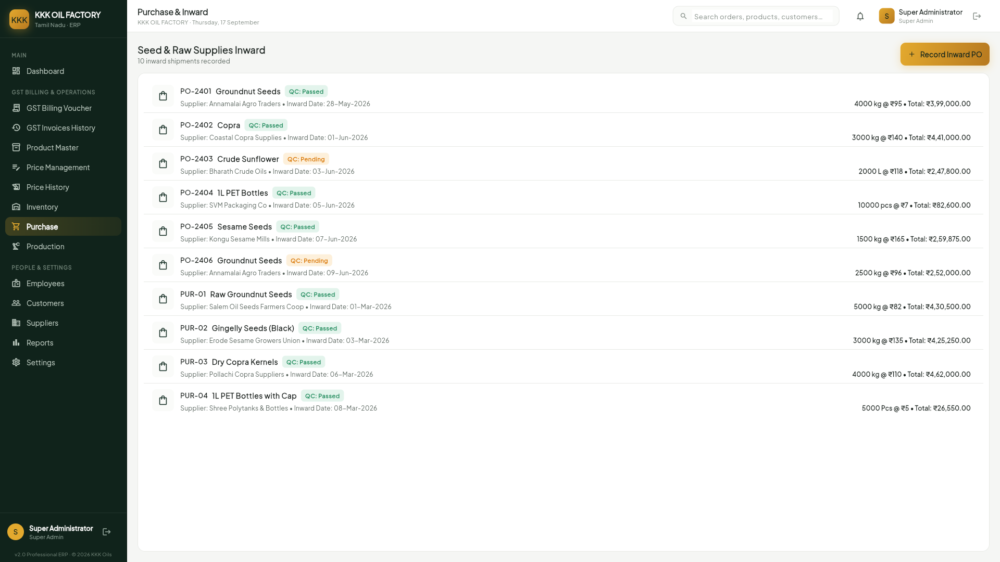
எடை மேடை படிவ விவரங்கள்
- • Supplier Name: விதை வழங்கிய வியாபாரி அல்லது ஒழுங்குமுறை விற்பனைக் கூடம்.
- • Lorry / Vehicle No: விதை ஏற்றி வந்த லாரி அல்லது டிராக்டர் பதிவு எண்.
- • Gross & Tare Weight: லாரி மொத்த எடை, வண்டி எடை மற்றும் நிகர விதை எடை (Net).
- • Moisture %: விதை ஈரப்பதம் மற்றும் கழிவு அளவு சதவீதம்.
பொத்தான்கள் & செயல்பாடுகள்
-
Read Weighbridge (F4)கணினியுடன் இணைக்கப்பட்ட எடைமேடையிலிருந்து எடையை தானாக பெற
-
Save Purchase Inwardவிதை வரவை உறுதி செய்து கிடங்கு கணக்கில் வரவு வைக்க
-
Print Inward Slipலாரி ஓட்டுநருக்கு அதிகாரப்பூர்வ எடை ரசீது அச்சிட
-
Record Lab Testவிதை தரம் மற்றும் எண்ணெய் பிழிவு சதவீதத்தை பதிவு செய்ய
வேலை செய்யும் முறை (Workflow)
- லாரி எடைமேடையில் நின்றதும் விசைப்பலகையில் F4 அல்லது Read Weighbridge அழுத்தவும்.
- விதையை இறக்கிய பிறகு வண்டி எடையை எடுத்து நிகர எடையை உறுதி செய்யவும்.
- Save Purchase Inward கொடுத்து, Print Inward Slip மூலம் ரசீது வழங்கவும்.
SCREEN 10 · டெஸ்க்டாப் கணினி திரை
Expeller Milling Batches & Oil Recovery — எக்ஸ்பெல்லர் ஆலை உற்பத்தி & புண்ணாக்கு
/production
ஆலை மேற்பார்வையாளர், அரவை ஆப்பரேட்டர் & மேலாளர்
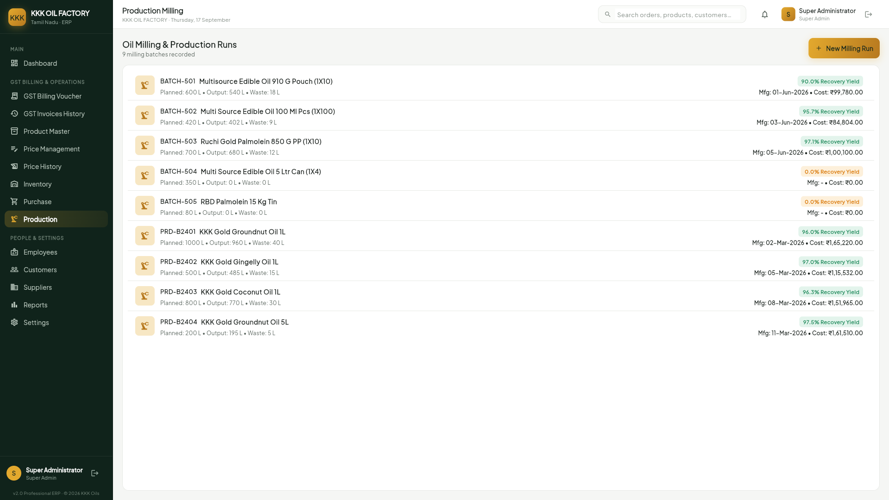
அரவை உற்பத்தி படிவ விவரங்கள்
- • Milling Machine ID: அரவை இயந்திர எண் (Expeller 1 / Expeller 2).
- • Raw Material Consumed: ஆலைக்கு பயன்படுத்திய விதை எடை (கிலோவில்).
- • Oil Extracted: பிழிந்து எடுக்கப்பட்ட சுத்தமான எண்ணெய் அளவு (லிட்டரில்).
- • Cake Output & Recovery: கிடைத்த புண்ணாக்கு மூட்டைகள் மற்றும் பிழிவு சதவீதம் %.
பொத்தான்கள் & செயல்பாடுகள்
-
Start Milling Batchஇயந்திரத்தில் புதிய அரவை பேட்சை முறைப்படி தொடங்க
-
Complete Milling Batchஅரவை முடிந்ததும் எண்ணெய் மற்றும் புண்ணாக்கு அளவை சேமிக்க
-
Quality Passஆய்வக தரக்கட்டுப்பாடு சான்றிதழ் அளித்து தொட்டிக்கு மாற்ற
-
Print Batch Sheetஉற்பத்தி விவர அட்டவணையை அச்சிட்டு பதிவேட்டில் வைக்க
வேலை செய்யும் முறை (Workflow)
- அரவை தொடங்கும் முன் Start Milling Batch கொடுத்து விதை எடையை பதிவு செய்யவும்.
- அரவை முடிந்ததும் கிடைத்த எண்ணெய் (லிட்டர்) மற்றும் புண்ணாக்கு எடையை உள்ளிடவும்.
- Complete Milling Batch கொடுத்ததும் எண்ணெய் தானாக தொட்டி இருப்புக்கு மாற்றப்படும்.
SCREEN 11 · டெஸ்க்டாப் கணினி திரை
Customer Accounts, Ledgers & Credit — வாடிக்கையாளர்கள் கணக்கு & கடன் நிலுவை
/customers
விற்பனை மேலாளர், காசாளர் & தலைமை கணக்காளர்
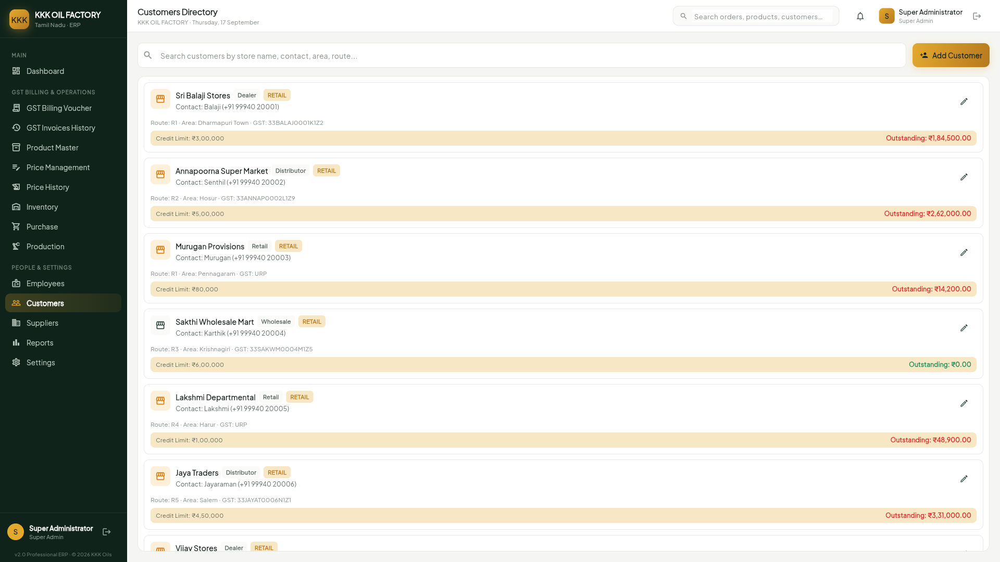
வாடிக்கையாளர் கணக்கு விவரங்கள்
- • Customer / Trader Name: மொத்த விநியோகஸ்தர் அல்லது கடை உரிமையாளர் பெயர்.
- • GSTIN & State Code: ஜிஎஸ்டி எண் மற்றும் மாவட்ட முகவரி.
- • Outstanding Credit ₹: கடைக்காரர் ஆலைக்கு தரவேண்டிய பழைய பாக்கி தொகை.
- • Credit Limit & Days: அனுமதிக்கப்பட்ட கடன் வரம்பு தொகை மற்றும் நாட்கள்.
பொத்தான்கள் & செயல்பாடுகள்
-
+ Add Customerபுதிய வியாபாரி அல்லது வாடிக்கையாளரை கணக்கில் பதிவு செய்ய
-
Receive Paymentபழைய பாக்கி வசூலானால் ரொக்கம்/வங்கி வழியே வரவு வைக்க
-
View Full Ledgerமுழுமையான பில் மற்றும் பண வரவு செலவு கணக்கை பார்க்க
-
Print Statementவாடிக்கையாளருக்கு அனுப்ப கணக்கு பேரேடு நகல் அச்சிட
-
Send WhatsApp Reminderகடன் பாக்கி நினைவூட்டல் செய்தி வாட்ஸ்அப்பில் அனுப்ப
வேலை செய்யும் முறை (Workflow)
- புதிய கடைக்காரர் வந்தால் + Add Customer மூலம் பெயர் மற்றும் ஜிஎஸ்டி எண்ணை சேர்க்கவும்.
- வாடிக்கையாளர் பணம் தந்தால் Receive Payment அழுத்தி வரவு ரசீது போடவும்.
- கடன் பாக்கியை வசூலிக்க Print Statement அல்லது வாட்ஸ்அப் செய்தி அனுப்பவும்.
SCREEN 12 · டெஸ்க்டாப் கணினி திரை
Seed Suppliers, Mandis & Payables — விதை சப்ளையர்கள் & கொள்முதல் கணக்கு
/suppliers
கொள்முதல் மேலாளர் & ஆலை கணக்காளர்
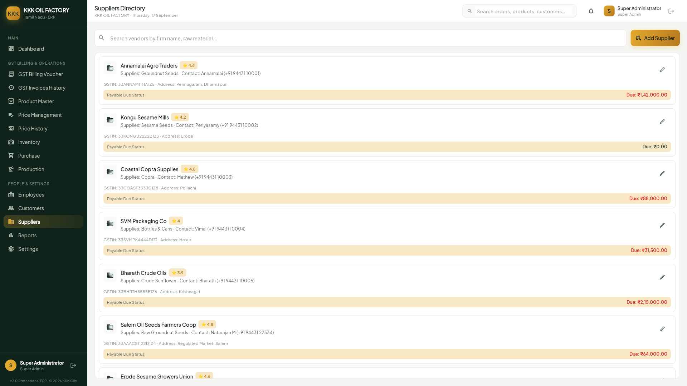
சப்ளையர் கணக்கு விவரங்கள்
- • Supplier / Mandi Name: மண்டி கமிஷன் கடை அல்லது விவசாய சங்கம் பெயர்.
- • Seed Variety Supplied: நிலக்கடலை காய், எள் அல்லது கொப்பரை சப்ளை.
- • Total Inward (Tons): இந்த சீசனில் இதுவரை சப்ளை செய்த மொத்த டன் அளவு.
- • Payable Balance ₹: ஆலை நிர்வாகம் சப்ளையருக்கு செலுத்த வேண்டிய தொகை.
பொத்தான்கள் & செயல்பாடுகள்
-
+ Add Supplierபுதிய மண்டி சப்ளையர் அல்லது வியாபாரியை பதிவு செய்ய
-
Record Supplier Paymentவங்கி NEFT/RTGS அல்லது காசோலை மூலம் பணம் தந்ததை பதிய
-
View Purchase Historyசப்ளையரிடமிருந்து வாங்கிய அனைத்து லாரி எடை பட்டியலை பார்க்க
-
Print Supplier Ledgerசப்ளையர் கணக்கு தணிக்கை அறிக்கையை அச்சிட
வேலை செய்யும் முறை (Workflow)
- புதிய விதை சப்ளையரை சேர்க்க + Add Supplier பொத்தானை அழுத்தவும்.
- விதை கொள்முதலுக்கு பணம் பட்டுவாடா செய்யும்போது Record Supplier Payment அழுத்தவும்.
- சப்ளையரின் அனைத்து எடை ரசீதுகளையும் சரிபார்க்க View Purchase History பயன்படுத்தவும்.
SCREEN 13 · டெஸ்க்டாப் கணினி திரை
Tax Analytics, GSTR-1 & Financial Reports — விற்பனை & ஜிஎஸ்டி அரசு வரி அறிக்கைகள்
/reports
ஆடிட்டர், நிறுவன உரிமையாளர் & தலைமை கணக்காளர்
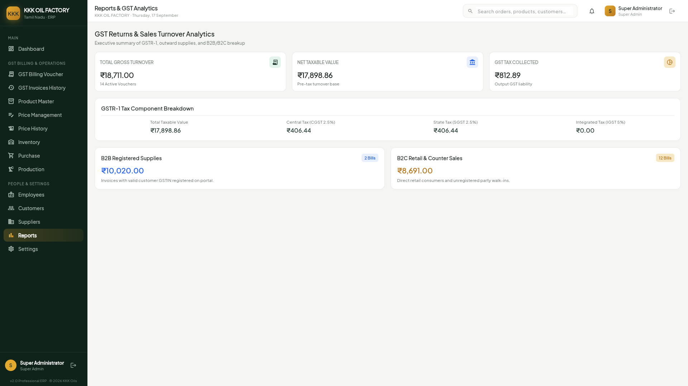
வரி & தணிக்கை அறிக்கைகள்
- • GSTR-1 B2B Table: பதிவு பெற்ற வியாபாரிகளுக்கான ஜிஎஸ்டி வரி அறிக்கை.
- • Daily Sales Register: தினசரி விற்பனை மற்றும் பண வசூல் பதிவேடு.
- • Stock Valuation Report: கிடங்கு மற்றும் தொட்டிகளில் உள்ள சரக்கின் மதிப்பு.
- • Profit & Loss Overview: ஆலை உற்பத்தி லாப-நஷ்ட கணக்கு ஒப்பீடு.
பொத்தான்கள் & செயல்பாடுகள்
-
Generate GSTR-1 JSONஅரசு ஜிஎஸ்டி போர்ட்டலில் நேரடியாக பதிவேற்ற கோப்பு உருவாக்க
-
Download Excel Summaryஅனைத்து விற்பனை கணக்குகளையும் எக்செல் கோப்பாக எடுக்க
-
Print Monthly Tax Statementமாதாந்திர வரி அறிக்கையை ஆடிட்டர் பார்வைக்கு அச்சிட
-
Filter by Quarterகாலாண்டு வாரியாக விற்பனையை ஆய்வு செய்ய
வேலை செய்யும் முறை (Workflow)
- மாதம் முடிந்ததும் உரிய தேதியை தேர்வு செய்து GSTR-1 B2B Table அறிக்கையை திறக்கவும்.
- Generate GSTR-1 JSON பொத்தானை அழுத்தி அரசு போர்ட்டலில் தாக்கல் செய்யவும்.
- ஆடிட்டருக்கு அனுப்ப Download Excel Summary மூலம் முழு விவரங்களையும் பதிவிறக்கவும்.
SCREEN 14 · டெஸ்க்டாப் கணினி திரை
Staff Directory, Roles & Authorization — ஆலை ஊழியர்கள் & மென்பொருள் அனுமதி
/employees
Super Admin & ஆலை மனிதவள மேலாளர்
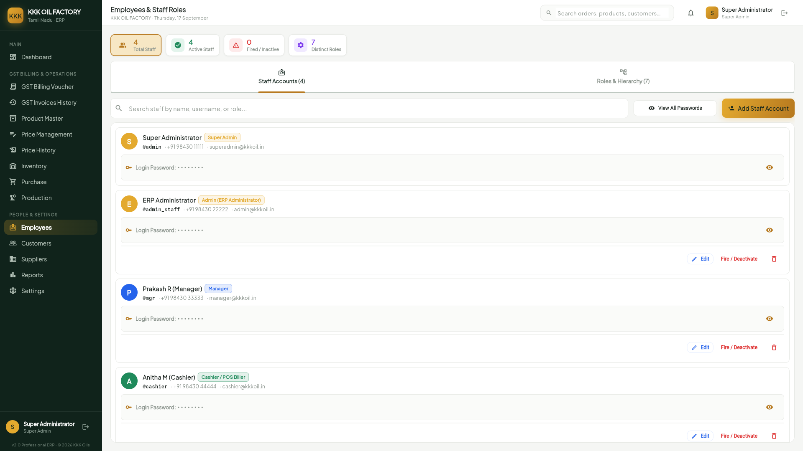
ஊழியர் கணக்கு விவரங்கள்
- • Employee Name & ID: பணியாளர் பெயர் மற்றும் ஆலை அடையாள எண்.
- • Assigned Role: பணிப் பொறுப்பு (Cashier / Manager / Supervisor / Driver).
- • Screen Permissions: அந்த ஊழியர் பார்க்கக்கூடிய அனுமதிக்கப்பட்ட திரைகள்.
- • Account Status: பணியில் உள்ளார் (Active) அல்லது விடுப்பில் உள்ளார் (Inactive).
பொத்தான்கள் & செயல்பாடுகள்
-
+ Add Employeeபுதிய பணியாளருக்கு கணினி பயனர் கணக்கு உருவாக்க
-
Edit Permissionsஊழியரின் மென்பொருள் அனுமதிகளை மாற்றியமைக்க
-
Reset Passwordமறந்துபோன கடவுச்சொல்லை மாற்றி புதிய கடவுச்சொல் வழங்க
-
Deactivate Userபணியை விட்டு நின்றால் கணக்கை உடனடியாக முடக்க
வேலை செய்யும் முறை (Workflow)
- புதிய காசாளர் சேர்ந்தால் + Add Employee கொடுத்து பெயர் மற்றும் கைபேசி எண்ணை பதியவும்.
- அவருக்கு பில்லிங் மட்டுமே தெரியும்படி Edit Permissions மூலம் பில்லிங் அனுமதி வழங்கவும்.
- கடவுச்சொல்லை மாற்ற வேண்டியிருந்தால் Reset Password பொத்தானைப் பயன்படுத்தவும்.
SCREEN 15 · டெஸ்க்டாப் கணினி திரை
Company Profile, Printer & Hardware Setup — ஆலை தகவல் & பிரிண்டர் கணினி அமைப்புகள்
/settings
Super Admin & சிஸ்டம் பொறியாளர்
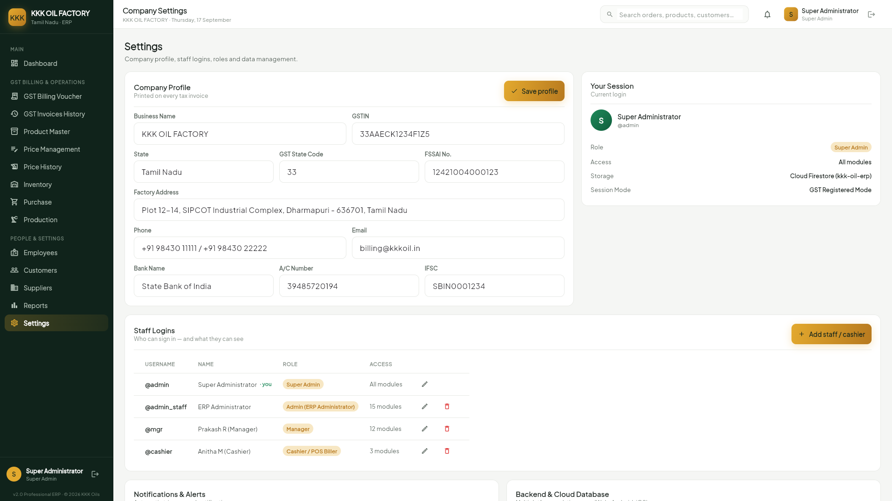
ஆலை & வன்பொருள் அமைப்புகள்
- • Company Profile: ஆலை பெயர், FSSAI உணவு பாதுகாப்பு எண், முகவரி, வங்கி விவரம்.
- • Tax Configuration: மாநிலத்திற்குள் CGST+SGST மற்றும் வெளிமாநில IGST அமைப்புகள்.
- • Printer Selection: A4 லேசர் பிரிண்டர் அல்லது 80mm தெர்மல் பிரிண்டர் இணைப்பு.
- • Automated Cloud Backup: தினசரி இரவு கணக்குகள் தானாக பாதுகாப்பாக பேக்கப் ஆகும் முறை.
பொத்தான்கள் & செயல்பாடுகள்
-
Save All Settingsமாற்றிய அனைத்து ஆலை அமைப்புகளையும் உறுதி செய்து சேமிக்க
-
Test Print (Thermal)சிறிய தெர்மல் பில் பிரிண்டர் சரியாக அச்சிடுகிறதா என பார்க்க
-
Test Print (A4)A4 லேசர் பிரிண்டர் இணைப்பு சோதிக்க
-
Backup Database Nowகணினியில் உள்ள அனைத்து கணக்குகளையும் உடனே பேக்கப் எடுக்க
வேலை செய்யும் முறை (Workflow)
- ஆலையின் வங்கி கணக்கு எண் அல்லது முகவரி மாறினால் உள்ளிட்டு Save All Settings அழுத்தவும்.
- பிரிண்டர் வேலை செய்யவில்லை என்றால் Test Print கொடுத்து சரிபார்க்கவும்.
- தினமும் இரவு வேலை முடிந்ததும் Backup Database Now கொடுத்து கணக்குகளை பத்திரப்படுத்தவும்.
SCREEN M-01 · மொபைல் செயலி திரை
Mobile Login Gateway — மொபைல் செயலி உள்நுழைவு திரை
MOBILE APP
களப்பணியாளர்கள், ஓட்டுநர்கள் & விற்பனையாளர்கள்
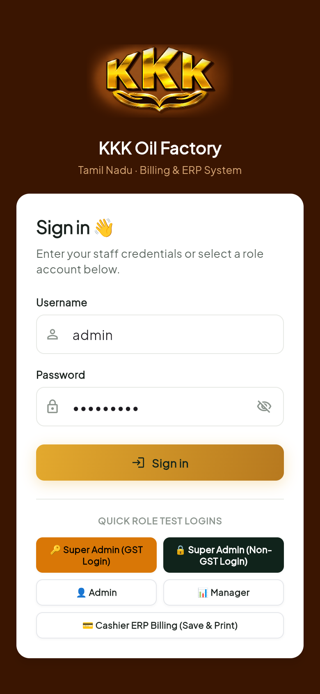
மொபைல் உள்நுழைவு விவரங்கள்
- • Username: ஊழியரின் கைபேசி எண் அல்லது பயனர் பெயர்.
- • Password: மொபைல் பாதுகாப்பிற்கான கடவுச்சொல்.
- • Brand Identity: அதிகாரப்பூர்வ கே.கே.கே தங்க லோகோ கொண்ட முகப்பு திரை.
- • Remember Login: அடுத்த முறை வேகமாக திறக்க பயனர் பெயரை சேமிக்கும் வசதி.
பொத்தான்கள் & செயல்பாடுகள்
-
Sign inகைபேசி செயலியில் உள்நுழைந்து முக்கிய பலகைக்குச் செல்ல
-
Show Password (Eye)தட்டச்சு செய்த கடவுச்சொல்லை சரிபார்க்க
-
Supervisor Quick Fillமேற்பார்வையாளர் கணக்கை ஒரு கிளிக்கில் நிரப்ப
-
Cashier Quick Fillபில்லிங் காசாளர் கணக்கை நிரப்ப
வேலை செய்யும் முறை (Workflow)
- கைபேசியில் கே.கே.கே செயலியை திறக்கவும்.
- பயனர் பெயர் மற்றும் கடவுச்சொல்லை தட்டச்சு செய்யவும்.
- Sign in பொத்தானை அழுத்தவும்; உடனே மொபைல் பலகை தோன்றும்.
SCREEN M-02 · மொபைல் செயலி திரை
Mobile Operations Dashboard — மொபைல் முதன்மை கட்டுப்பாட்டு பலகை
MOBILE APP
உரிமையாளர், ஆலை மேலாளர் & விற்பனை மேற்பார்வையாளர்
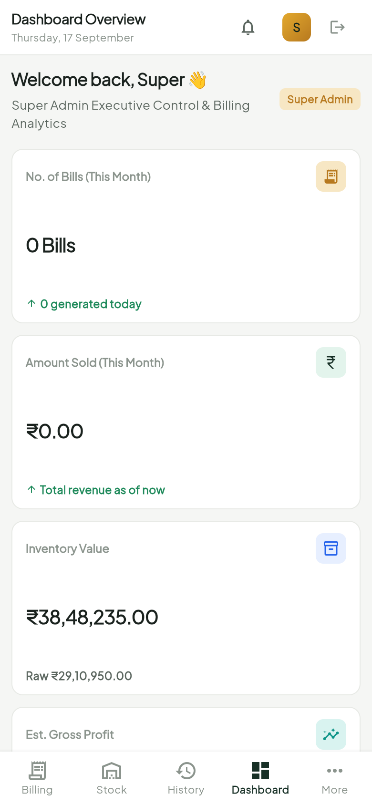
மொபைல் முக்கிய புள்ளிவிவரங்கள்
- • Today Sales ₹: இன்றைய மொத்த ரொக்க மற்றும் UPI விற்பனை வசூல்.
- • Silo Levels: எண்ணெய் தொட்டிகளில் உள்ள தற்போதைய அளவு சதவீதம் %.
- • Active Orders: ஆலை வாசலில் காத்திருக்கும் லாரிகள் மற்றும் ஆர்டர்கள்.
- • Instant Refresh: விரலால் கீழ்நோக்கி இழுத்து (Pull-to-refresh) விவரங்களை புதுப்பிக்கலாம்.
பொத்தான்கள் & செயல்பாடுகள்
-
Fast Billing POSஉடனடியாக மொபைல் பில்லிங் கவுண்டருக்கு செல்ல
-
Check Silo Levelsஎண்ணெய் தொட்டிகளின் முழு இருப்பு விவரத்தை பார்க்க
-
Refresh Viewசமீபத்திய விற்பனை நிலவரங்களை உடனே புதுப்பிக்க
-
View Pending Billsவசூலாகாத பழைய பாக்கிகளை மொபைலில் பார்க்க
வேலை செய்யும் முறை (Workflow)
- ஆப் திறந்தவுடன் முதல் பக்கத்தில் இன்றைய விற்பனை மற்றும் தொட்டி இருப்பு தெரியும்.
- கீழே உள்ள Fast Billing POS பட்டனை அழுத்தி உடனே பில் போடலாம்.
- தொட்டி அளவுகளை நேரடியாக சரிபார்க்க Check Silo Levels தொடவும்.
SCREEN M-03 · மொபைல் செயலி திரை
Mobile Fast Billing POS Counter — மொபைல் அதிவேக பில்லிங் கவுண்டர்
MOBILE APP
ஆலை வாசல் காசாளர்கள் & நேரடி சில்லறை விற்பனையாளர்கள்
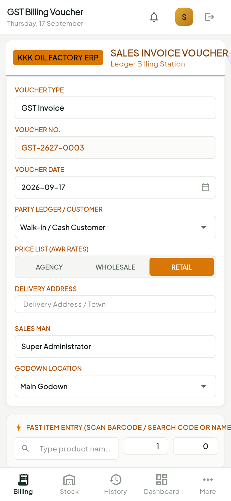
மொபைல் பில்லிங் படிவ விவரங்கள்
- • Customer Mobile: வாடிக்கையாளரின் 10 இலக்க தொலைபேசி எண்.
- • Quick Product Cards: படங்கள் மற்றும் விலையுடன் கூடிய எண்ணெய் தேர்வு கார்டுகள்.
- • Qty (+ / -) Counter: விரலால் தொட்டு பாக்கெட் / டின் எண்ணிக்கையை கூட்டலாம்.
- • Total Amount ₹: ஜிஎஸ்டி வரியுடன் மொத்த தொகை உடனுக்குடன் கணக்கிடப்படும்.
பொத்தான்கள் & செயல்பாடுகள்
-
Generate Billவிற்பனை பில்லை முறைப்படி உருவாக்கி சேமிக்க
-
Print Bluetooth Receiptகையடக்க புளூடூத் பிரிண்டரில் உடனடியாக சிறிய ரசீது அச்சிட
-
Share WhatsApp Billவாடிக்கையாளர் வாட்ஸ்அப்பிற்கு பில் நகலை உடனே அனுப்ப
-
Pay: CASH / UPIரொக்கம் அல்லது கூகுள் பே பணம் பெற்றதை பதிவு செய்ய
வேலை செய்யும் முறை (Workflow)
- வாடிக்கையாளர் கேட்கும் எண்ணெயின் கார்டை தொட்டு (+ / -) அளவைத் தேர்ந்தெடுக்கவும்.
- வாடிக்கையாளர் மொபைல் எண்ணை உள்ளிட்டு Generate Bill அழுத்தவும்.
- Print Bluetooth Receipt அழுத்தினால் உடனே கையில் ரசீது வந்துவிடும்!
SCREEN M-04 · மொபைல் செயலி திரை
Mobile Silo Tanks & Stock Gauges — மொபைல் ஆயில் தொட்டி இருப்பு அளவுமானி
MOBILE APP
கிடங்கு காப்பாளர், உற்பத்தி மேற்பார்வையாளர் & மேலாளர்
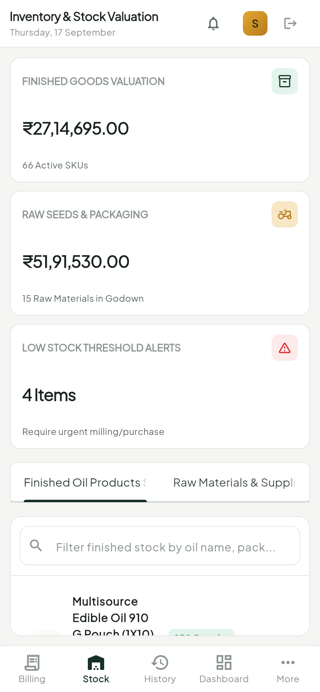
தொட்டி அளவுமானி விவரங்கள்
- • Tank 1 Groundnut Oil: கடலை எண்ணெய் தொட்டி இருப்பு லிட்டரில் & %.
- • Tank 2 Gingelly Oil: நல்லெண்ணெய் தொட்டி இருப்பு லிட்டரில் & %.
- • Warehouse Packed Stock: குடோனில் உள்ள 1L பாக்கெட் மற்றும் 15Kg டின் எண்ணிக்கை.
- • Color Gauges: பச்சை (போதுமான இருப்பு), மஞ்சள் (மிதமான இருப்பு), சிவப்பு (குறைவு).
பொத்தான்கள் & செயல்பாடுகள்
-
Log Physical Dipதொட்டியில் அளவுகோல் மூலம் எடுத்த நேரடி அளவை பதிவு செய்ய
-
Alert Managerதொட்டி இருப்பு குறைந்தால் மேலாளருக்கு எச்சரிக்கை செய்தி அனுப்ப
-
Scan Barcode Stockகுடோனில் உள்ள டின்களின் பார்கோடை கேமரா மூலம் ஸ்கேன் செய்ய
-
Stock Historyகடந்த 7 நாட்களில் தொட்டி இருப்பு மாற்றங்களை பார்க்க
வேலை செய்யும் முறை (Workflow)
- ஆலைக்குள் தொட்டியின் அருகில் சென்று திரையில் உள்ள சதவீதத்தை சரிபார்க்கவும்.
- அளவுகோல் மூலம் எடுத்த அளவை Log Physical Dip பொத்தான் மூலம் பதியவும்.
- சரக்கு குறைந்தால் Alert Manager அழுத்தி ஆலை மேலாளரை எச்சரிக்கலாம்.
SCREEN M-05 · மொபைல் செயலி திரை
Mobile Voucher History & Reprints — மொபைல் பில் வரலாறு & மறு அச்சு ரசீது
MOBILE APP
மொபைல் காசாளர்கள், மேற்பார்வையாளர்கள் & கணக்காளர்

பில் வரலாறு பட்டியல் விவரங்கள்
- • Receipt Number: பில் எண் (எ.கா. KKK-2026-M089).
- • Time & Customer: பில் போடப்பட்ட நேரம் மற்றும் வாடிக்கையாளர் பெயர்.
- • Total Amount ₹: விற்பனை தொகை மற்றும் பணம் செலுத்திய முறை (Cash/UPI).
- • Status Badge: பச்சை (பணம் பெறப்பட்டது), மஞ்சள் (நிலுவை).
பொத்தான்கள் & செயல்பாடுகள்
-
Reprint Receiptபுளூடூத் பிரிண்டரில் மீண்டும் பில் ரசீது அச்சிட
-
Send SMS Receiptவாடிக்கையாளரின் செல்போனுக்கு இலவச SMS ரசீது அனுப்ப
-
WhatsApp Shareபில் விவரங்களை வாட்ஸ்அப்பில் பகிர
-
Filter by Todayஇன்றைய பில்களை மட்டும் பிரித்து பார்க்க
வேலை செய்யும் முறை (Workflow)
- வாடிக்கையாளர் மீண்டும் ரசீது கேட்டால் பட்டியலில் அந்த பில்லைத் தொடவும்.
- Reprint Receipt அழுத்தினால் சிறிய தெர்மல் பிரிண்டரில் மறுபதிப்பு வரும்.
- அல்லது WhatsApp Share மூலம் வாடிக்கையாளர் போனுக்கு பில்லை அனுப்பலாம்.
SCREEN M-06 · மொபைல் செயலி திரை
Mobile More Modules Navigation Hub — மொபைல் கூடுதல் மெனு & சாதன அமைப்புகள்
MOBILE APP
அனைத்து மொபைல் பயனர்கள் & மேற்பார்வையாளர்கள்
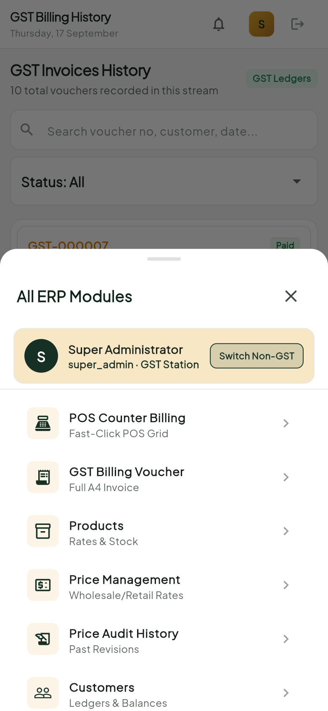
கூடுதல் மெனு அம்சங்கள்
- • Purchase Inward: லாரி விதை வரவு எடை பதிவிடும் திரை.
- • Production Batches: ஆலை அரவை பேட்ச் விவரங்கள் பதிவிடும் திரை.
- • Customer Ledgers: வாடிக்கையாளர் பழைய கடன் பாக்கிகளை பார்க்கும் திரை.
- • Bluetooth Settings: வயர்லெஸ் பில் பிரிண்டர் இணைக்கும் திரை.
பொத்தான்கள் & செயல்பாடுகள்
-
Connect Printerபுளூடூத் தெர்மல் பிரிண்டரை கைபேசியுடன் இணைக்க
-
Sync Offline Billsஇணையம் இல்லாதபோது போட்ட பில்களை சர்வரில் பதிவேற்ற
-
Check App Updateசெயலியின் புதிய பதிப்பை சரிபார்க்க
-
Logoutமொபைல் கணக்கிலிருந்து பாதுகாப்பாக வெளியேற
வேலை செய்யும் முறை (Workflow)
- காலையில் புளூடூத் பிரிண்டரை ஆன் செய்து Connect Printer கொடுத்து இணைக்கவும்.
- விதை வரவு அல்லது உற்பத்தி பதிவு செய்ய தொடர்புடைய மெனுவை தேர்வு செய்யவும்.
- பணி முடிந்ததும் Sync Offline Bills கொடுத்து அனைத்து பில்களையும் பத்திரப்படுத்தவும்.
MASTER REFERENCE INDEX
அனைத்து முக்கிய பொத்தான்கள் & சுருக்குவழிகள் (Hotkeys)
BUTTON DIRECTORY
அனைத்து ஊழியர்கள்
கணினி விசைப்பலகை சுருக்குவழிகள் (Keyboard Shortcuts & Hotkeys)
| சுருக்குவழி (Hotkey) | பொத்தான் பெயர் (Button Name) | பயன்படும் திரை (Screen) | செயல்முறை விளக்கம் (Operational Action in Tamil) |
|---|---|---|---|
| F2 | Save Invoice | /billing (விற்பனை) | பில்லை சேமித்து, இருப்பு கழித்து, உடனடியாக பில் தயார் செய்யும். |
| F4 | Read Weighbridge | /purchase (விதை வரவு) | எடைமேடையில் உள்ள லாரியின் மொத்த/நிகர எடையை தானாக திரையில் கொண்டுவரும். |
| Ctrl + P | Print Invoice | /billing & /history | அரசு வரி அங்கீகரிக்கப்பட்ட A4 அல்லது தெர்மல் பில்லை நேரடியாக அச்சிடும். |
| Esc | Clear Form | அனைத்து திரைகள் | தவறாக தட்டச்சு செய்த விவரங்களை உடனே அழித்து புதிய படிவமாக்கும். |
முதன்மை மென்பொருள் பொத்தான்கள் விளக்கம் (Core Software Action Buttons)
| ஆங்கில பொத்தான் (Button) | திரை (Screen) | விளக்கம் & பயன்பாடு (Tamil Operational Description) |
|---|---|---|
| Sign in | Login | பயனர் பெயர், கடவுச்சொல்லை சரிபார்த்து உரிய திரை பலகைக்கு அழைத்துச் செல்லும். |
| New Invoice (+) | Dashboard | டாஷ்போர்டில் இருந்து ஒரே கிளிக்கில் புதிய விற்பனை பில் போடும் பக்கத்திற்கு செல்லும். |
| Update All Prices | Price Management | நிர்ணயித்த புதிய எண்ணெய் விலையை உடனடியாக அனைத்து கவுண்டர்களுக்கும் நடைமுறைப்படுத்தும். |
| Start Milling Batch | Production | எக்ஸ்பெல்லர் இயந்திரத்தில் புதிய ஆலை அரவை பேட்சை அதிகாரப்பூர்வமாக தொடங்கும். |
| Complete Milling Batch | Production | அரவை முடிந்த பின் கிடைத்த எண்ணெய் லிட்டர் மற்றும் புண்ணாக்கு எடையை சேமிக்கும். |
| + Add Customer | Customers | புதிய மொத்த அல்லது சில்லறை வியாபாரியின் ஜிஎஸ்டி மற்றும் முகவரியை பதிவு செய்யும். |
| Receive Payment | Customers | வாடிக்கையாளர் பழைய கடன் பாக்கி செலுத்தினால் ரொக்கம்/வங்கி வழியே வரவு வைக்கும். |
| Generate GSTR-1 JSON | Reports | அரசு ஜிஎஸ்டி இணையதளத்தில் நேரடியாக தாக்கல் செய்யக்கூடிய ஜிஎஸ்டி கோப்பை உருவாக்கும். |
| Backup Database Now | Settings | ஆலையின் அனைத்து விற்பனை, கொள்முதல் கணக்குகளையும் உடனடியாக கணினியில் பேக்கப் எடுக்கும். |
STANDARD OPERATING PROCEDURES (SOP)
தினசரி ஆலை செயல்பாட்டு விதிமுறைகள் (Morning to Night)
DAILY SOP
அனைத்து ஆலை ஊழியர்கள்
காலை நேரம்: ஆலை தொடக்கம் (08:00 AM - 10:00 AM)
- கணினி & பிரிண்டர் தொடங்குதல்: கணினியை ஆன் செய்து, பில் பிரிண்டரில் காகித ரோல் உள்ளதா என சரிபார்க்கவும்.
- பயனர் உள்நுழைவு (Login): உங்கள் பயனர் பெயர் மற்றும் கடவுச்சொல் மூலம் சரியான பொறுப்பில் (Role) உள்நுழையவும்.
- தொட்டி இருப்பு ஆய்வு (Inventory):
/inventoryசென்று சைலோ தொட்டிகளில் உள்ள எண்ணெய் இருப்பை சரிபார்க்கவும். - தினசரி விலை நிர்ணயம் (Price Setting): இன்றைய மண்டி விலைக்கு ஏற்ப
/price-managementபக்கத்தில் விலையை புதுப்பித்து Update All Prices அழுத்தவும். - புளூடூத் பிரிண்டர் இணைப்பு: மொபைல் பயன்படுத்தும் ஊழியர்கள் தங்கள் போனில் Connect Printer கொடுத்து தயாராக வைக்கவும்.
பகல் நேரம்: விற்பனை & விதை வரவு (10:00 AM - 05:00 PM)
- விற்பனை பில்லிங் (Billing): வாடிக்கையாளர் எண் உள்ளிட்டு, எண்ணெய் வகை மற்றும் அளவை தேர்வு செய்து F2 அழுத்தி பில் போடவும்.
- பணம் வசூல் உறுதி: ரொக்கம், UPI அல்லது கடன் முறையை துல்லியமாக தேர்வு செய்து பில்லில் குறிப்பிடவும்.
- விதை லாரி எடை மேடை (Purchase): விதை ஏற்றி வரும் லாரிகளை எடைமேடையில் நிறுத்தி F4 (Read Weighbridge) மூலம் எடையை பதிவு செய்யவும்.
- எடை ரசீது வழங்கல்: லாரி காலியானதும் நிகர எடையை சரிபார்த்து ஓட்டுநரிடம் Print Inward Slip ரசீதை வழங்கவும்.
மாலை நேரம்: உற்பத்தி பேட்ச் பதிவு (05:00 PM - 07:00 PM)
- அரவை உற்பத்தி கணக்கீடு: எக்ஸ்பெல்லர் இயந்திரத்தில் இன்று ஆட்டப்பட்ட விதை எடை மற்றும் கிடைத்த எண்ணெய் அளவை அளக்கவும்.
- உற்பத்தி பேட்ச் சேமிப்பு (Production):
/productionசென்று எண்ணெய் (லிட்டர்) மற்றும் புண்ணாக்கு (கிலோ) அளவை உள்ளிட்டு Complete Milling Batch அழுத்தவும். - சைலோ தொட்டிக்கு மாற்றுதல்: உற்பத்தி செய்யப்பட்ட எண்ணெய் உரிய சேமிப்பு தொட்டிக்கு மாற்றப்பட்டு இருப்பு அதிகரித்ததை சரிபார்க்கவும்.
இரவு நேரம்: கணக்கு சமர்ப்பிப்பு & பேக்கப் (07:00 PM - 08:30 PM)
- ரொக்க பணப்பெட்டி சரிபார்ப்பு (Cash Reconciliation): கல்லாப்பெட்டியில் உள்ள ரொக்கத்தை கணினியில் உள்ள இன்றைய மொத்த விற்பனை தொகையோடு ஒப்பிட்டு சரிபார்க்கவும்.
- கடன் வசூல் வரவு: வசூலான பழைய கடன் பாக்கிகளை
/customersபக்கத்தில் Receive Payment மூலம் வரவு வைக்கவும். - தினசரி விற்பனை பதிவேடு அச்சிடல்:
/reportsசென்று இன்றைய விற்பனை சுருக்கத்தை (Daily Sales Summary) பிரிண்ட் எடுத்து கையொப்பமிடவும். - முழுமையான தரவு பேக்கப் (Backup):
/settingsசென்று Backup Database Now பொத்தானை அழுத்தி அனைத்து கணக்குகளையும் பேக்கப் எடுக்கவும். - பாதுகாப்பான வெளியேற்றம் (Logout): அனைத்து கணினிகளையும் லாக்-அவுட் செய்துவிட்டு பாதுகாப்பாக ஆலை கதவை பூட்டவும்.